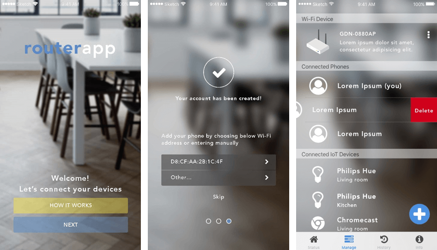

Portfolio

UX Research + Mobile UI Mockup
A smart home controller prototype was originally created in a hackathon event. I recently formed a new idea and discovered the insights of how to drive developments to another level.
UX Research + Visual (HTML/CSS/JS)
My client who's a chemical R&D and manufacturer with worldwide customers needed a website renovation. The work includes user research, design development, usability test, and product delivery.
Freelance Website Projects
Design + Dev + Admin

WOW_TOMATO
Jan. 2018
Credlin Co., Ltd.
Sept. 2017
Introduction
Hi, my name is Chuck. I am a motivated web application developer interested in UX research and passionate about creating a seamless and enjoyable experience of the digital products. Because of my interdisciplinary and research backgrounds, I excel to discover, extrapolate, and address challenges by conducting analytical studies with both qualitative and quantitative approaches. Areas of interest: Sustainable Architecture, Home Automation, and Open Source Learning.
In my previous experiences before becoming the current development role, I helped to analyze green building design solutions in the architectural industry; I designed and managed educational apparatuses for STEM college students; and I was in the government think tank to facilitate the adoption of renewable energy technologies and energy-saving measures.
I was born and raised in Taiwan, moved to the U.S. in early 2017, and am currently based in Chicagoland. Fascinated and inspired by the cultural differences, I also care deeply about equality and liberty in our societies.
Feel free to drop me a note. Thank you for stopping by!
"Charles is a standout performer with skills and experience across many areas. He is equally adept at technical / scientific questions as business issues. And he moves comfortably between languages and cultures, including Taiwanese, Chinese and American. At OnGreen, we threw everything we could at him -- research, analysis, communications, project execution -- and he knocked it all out of the park."
— Stanley Holt · former President, OnGreen / current Head of Marketing and Operations, Aiva Health
Résumé
Contact